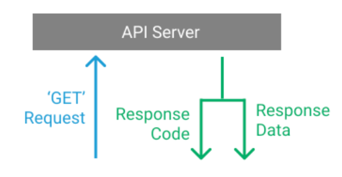

¿Cuáles son los tres verbos de API?
Con la librería «requests» en Python podemos realizar peticiones mediante cualquier método HTTP. Permite especificar URL y parámetros de consulta facilmente . Instalaremos la librería Requests usando pip.
pip install requests
A continuación se citan tres verbos API de entre otros posibles:
GET
Solicitar un recurso. Recupera datos del servidor de forma segura sin alterarlos.
Ejemplo:
import requests
response = requests.get('https://jsonplaceholder.typicode.com/posts')
print(response.status_code)
Si todo ha ido bien el código de estado (response.status_code) devolverá el código 200. Si el recurso no es encontrado devolverá error 404. Si la petición esta mal formada devolverá error 400. Si Error interno del servidor (algo salió mal en el servidor) devolverá error 500.
A continuación se muestra un ejemplo para recuperar un recurso.
import requests
response = requests.get("https://jsonplaceholder.typicode.com/posts/1")
data = response.json()
print(data)
Esquema:
Sintaxis:
requests.get(url, params={key: value}, args)
args significa cero o más argumentos nombrados en la siguiente tabla de parámetros.
Tabla Parámetros:
Parametros |
Descripción |
|---|---|
url |
Requerido. La URL de la solicitud. |
params |
Opcional. Un diccionario, lista de tuplas o bytes para enviar como cadena de consulta. Predeterminado None |
allow_redirects |
Opcional. Un booleano para habilitar/deshabilitar la redirección. Predeterminado True |
auth |
Opcional. Una tupla para habilitar una determinada autenticación HTTP. Predeterminado None |
cert |
Opcional. Una cadena o tupla que especifica un archivo o clave de certificado. Predeterminado None |
cookies |
Opcional. Un diccionario de cookies para enviar a la URL especificada. Predeterminado None |
headers |
Opcional. Un diccionario de encabezados HTTP para enviar a la URL especificada. Predeterminado None |
proxies |
Opcional. Un diccionario del protocolo de la URL del proxy. Predeterminado None |
stream |
Opcional. Una indicación booleana si la respuesta debe descargarse inmediatamente (Falso) o transmitirse (Verdadero). Predeterminado Falso |
timeout |
Opcional. Un número, o una tupla, que indica cuántos segundos esperar hasta que el cliente establezca una conexión y/o envíe una respuesta. Valor predeterminado None, lo que significa que la solicitud continuará hasta que se cierre la conexión. |
verify |
Opcional. Una indicación booleana o de cadena para verificar o no el certificado TLS del servidor. True predeterminado |
POST
Crear un recurso. Envía datos al servidor para crear un nuevo recurso.
Ejemplo:
import requests
data = {"title": "New Post", "body": "This is a new post."}
response = requests.post("https://jsonplaceholder.typicode.com/posts", json=data)
new_post = response.json()
print(new_post)
En caso de éxito devolverá un código 201 y la ubicación o recurso creado. Si el recurso no tiene un URL, se utiliza el código 200 o el 204.
Sintaxis:
requests.post(url, data={key: value}, json={key: value}, args)
args significa cero o más argumentos nombrados en la siguiente tabla de parámetros.
Tabla Parámetros:
Parametros |
Descripción |
|---|---|
url |
Requerido. La URL de la solicitud. |
data |
Opcional. Un diccionario, lista de tuplas o bytes para enviar como cadena de consulta. |
json |
Opcional. Un objeto JSON para enviar a la URL especificada. |
files |
Opcional. Un diccionario de archivos para enviar a la URL especificada. |
allow_redirects |
Opcional. Un booleano para habilitar/deshabilitar la redirección. Predeterminado True |
auth |
Opcional. Una tupla para habilitar una determinada autenticación HTTP. Predeterminado None |
cert |
Opcional. Una cadena o tupla que especifica un archivo o clave de certificado. Predeterminado None |
cookies |
Opcional. Un diccionario de cookies para enviar a la URL especificada. Predeterminado None |
headers |
Opcional. Un diccionario de encabezados HTTP para enviar a la URL especificada. Predeterminado None |
proxies |
Opcional. Un diccionario del protocolo de la URL del proxy. Predeterminado None |
stream |
Opcional. Una indicación booleana si la respuesta debe descargarse inmediatamente (False) o transmitirse (True). Predeterminado False |
timeout |
Opcional. Un número, o una tupla, que indica cuántos segundos esperar hasta que el cliente establezca una conexión y/o envíe una respuesta. Valor predeterminado None, lo que significa que la solicitud continuará hasta que se cierre la conexión. |
verify |
Opcional. Una indicación booleana o de cadena para verificar o no el certificado TLS del servidor. True predeterminado |
PUT
Actualiza o reemplaza un recurso. Actualiza un recurso existente en el servidor y se debe enviar el recurso completo a actualizar, en su versión modificada.
En este ejemplo, imaginemos un escenario en el que un usuario desea actualizar la información de un post en una plataforma de redes sociales. Se puede utilizar una solicitud PUT para reemplazar los datos del post existente con la información actualizada.
import requests
# Define the API endpoint for updating user profiles
url = "https://jsonplaceholder.typicode.com/posts/1"
# Updated user profile data
updated_profile = {
"userId": 99,
"id": 1,
"title": "Updated title information.",
"body": "Updated body information.",
}
# Send a PUT request to update the user profile
response = requests.put(url, json=updated_profile)
if response.status_code == 200:
print("Profile updated successfully!")
else:
print("Profile update failed.")
Si el recurso no existe, lo crea e indica el éxito con un código 200 o 204. El código 201 se utiliza cuando el recurso fue creado.
Además de estos tres anteriores existen más métodos de solicitud: